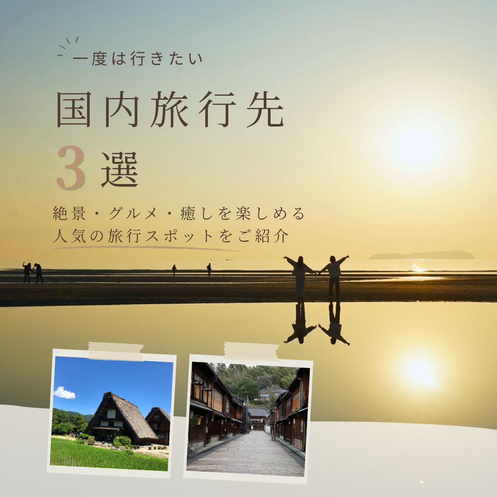

Other Works
Instagram Banner — Test Project
商品・サービスの魅力を1枚に凝縮した
Instagramフィード投稿用バナーです。

旅行先紹介のInstagram投稿として、複数のスポット情報をまとめながらも、 「行ってみたい」と感じてもらえる魅力的な見せ方が求められました。
夕景写真をメインビジュアルに使用し、旅行への期待感が伝わる構成に設計しました。 スポット写真をポラロイド風に配置し、複数の旅行先を直感的にイメージできるデザインにしました。
情報を整理しながら、旅先の魅力や世界観を伝えるビジュアル設計を学びました。 写真の選定や配置によって、投稿全体の印象が大きく変わることを実感した制作でした。
夕景写真をメインに使用し、旅先で過ごす時間を想像できるビジュアルを意識しました。 情報を詰め込みすぎず、「ここに行ってみたい」と感じてもらえる空気感を大切にしています。
白川郷やひがし茶屋街の写真をポラロイド風に配置し、1枚の中で複数の旅行先を自然に紹介できる構成にしました。 一覧性とワクワク感の両立を意識しています。
落ち着いたブラウン系の文字と紙素材風の装飾を取り入れ、行雑誌を眺めるような雰囲気に仕上げました。 観光情報だけでなく、旅への期待感が伝わるデザインを目指しています。 この案件は「開放感」「旅行雑誌感」「行きたくなる空気感」が強みなので、その3つを軸にするとポートフォリオでも説明しやすいと思います。
旅行系の投稿では、スポット情報だけでなく、 「この場所に行ってみたい」と思える第一印象づくりが重要だと感じました。
今回の制作では、夕景写真を活かしたビジュアル設計と、 複数の旅行先を分かりやすく見せる情報整理を意識しています。
制作を通して、写真選びやレイアウトによって投稿全体の印象が大きく変わることを改めて学びました。 今後も、魅力が伝わる見せ方を意識しながらデザインの引き出しを増やしていきたいと考えています。
お仕事のご相談はお気軽にどうぞ
お問い合わせ